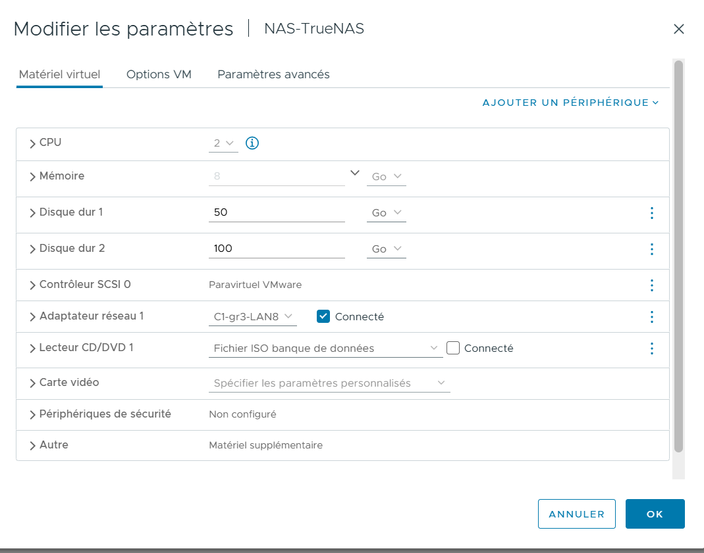
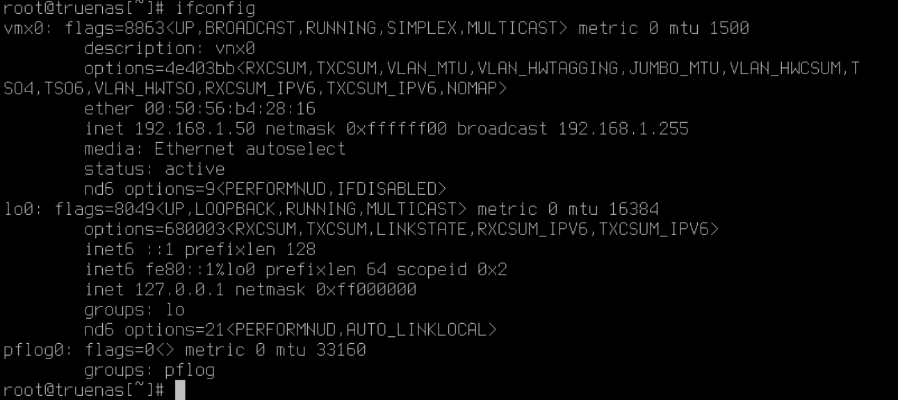
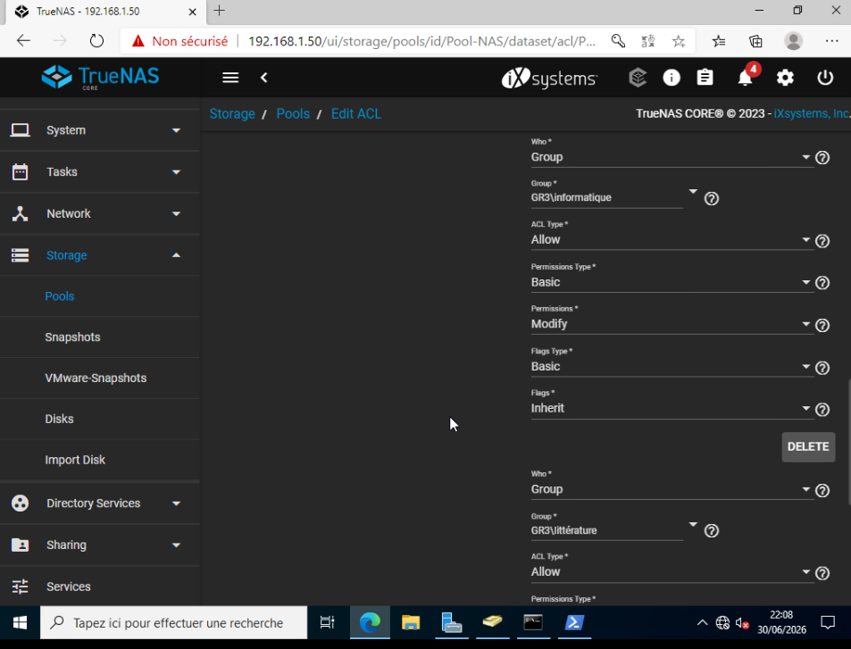
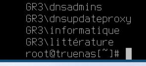

NAS TrueNAS intégré à Active Directory
Atelier de professionnalisation n°1, réalisé en binôme : choisir, installer et configurer un NAS, puis gérer les droits d'accès des utilisateurs et des groupes de l'Active Directory.

Objectifs
- Étudier les solutions de NAS existantes (matériel, logiciels, cloud) et en choisir une.
- Installer et configurer le NAS choisi.
- Configurer les droits d'accès des utilisateurs et des groupes de l'Active Directory, et tester l'accès aux dossiers partagés.
- Valider les tests.
Étude et choix de la solution
Un NAS est un serveur de stockage connecté au réseau, qui centralise, partage et sauvegarde les fichiers de plusieurs utilisateurs. Il existe des NAS domestiques, professionnels pour les PME, et d'entreprise avec haute disponibilité, ainsi que plusieurs solutions logicielles : TrueNAS, OpenMediaVault, Rockstor, XigmaNAS.
J'ai retenu TrueNAS pour la fiabilité du système de fichiers ZFS (intégrité des données, snapshots) et pour son support de l'Active Directory, qui correspondait exactement au besoin de gérer les droits par groupe.
Réalisation
- Machine virtuelle sur un hôte VMware vSphere : 2 vCPU, 8 Go de RAM, un disque de 50 Go pour le système et un disque de 100 Go pour les données. Installation en mode UEFI.
- Adressage IP statique configuré en console, puisqu'aucun serveur DHCP n'était présent sur le réseau.
- Pool ZFS créé sur le disque de données, avec trois datasets.
- Jonction au domaine Active Directory depuis l'interface web, vérifiée par la commande
midclt call directoryservices.get_statequi retourne l'état « HEALTHY ». - Droits d'accès (ACL) définis dataset par dataset, avec héritage pour que les règles s'appliquent aux futurs fichiers et sous-dossiers.
- Vérification de la connectivité réseau et de la résolution DNS, puis exposition des partages sur le réseau Windows.
Droits d'accès mis en place
| Dossier partagé | Groupes concernés | Droits |
|---|---|---|
| partage-commun | Informatique et littérature | Modification |
| partage-informatique | Informatique uniquement | Contrôle total |
| partage-litterature | Littérature uniquement | Contrôle total |
Captures d'écran




Difficultés rencontrées et solutions
- La VM bootait en boucle sur l'ISO : l'option « Connecter lors de la mise sous tension » du lecteur CD/DVD était restée cochée.
- Démarrage impossible en BIOS (erreur ACPI de la carte mère) : réinstallation de TrueNAS en démarrage UEFI.
- Adresse IP à 0.0.0.0 : pas de serveur DHCP et carte réseau non connectée. IP statique appliquée en console.
- Conflit d'adresse avec la box : la première adresse choisie ouvrait la page de la box. Remplacée par une adresse libre du réseau.
- Disques à numéros de série non uniques : l'option dédiée du Pool Manager a permis de créer le pool ZFS.
- NAS et serveur AD qui ne communiquaient pas : leurs horloges étaient trop décalées, ce que Kerberos ne tolère pas. Heure du NAS synchronisée sur celle du serveur.
- Groupes AD invisibles dans TrueNAS : cache de l'annuaire pas encore synchronisé, vérifié avec
wbinfo -g. - Pas de poste client Windows : aucune image ISO valide n'était disponible, donc les tests ont été faits depuis le serveur AD.
Bilan et suite
Le NAS est intégré au domaine, les groupes sont reconnus et les droits sont configurés par dataset. Au moment de la rédaction du compte rendu, l'accès SMB depuis le serveur AD n'avait pas pu être validé : les tentatives de correction faisaient planter le NAS, dont la configuration n'était pas conservée au redémarrage. La suite logique est de valider les accès depuis un vrai poste client Windows pour démontrer l'étanchéité des dossiers entre les groupes.
Compétences travaillées
Installer, tester et déployer une solution d'infrastructure (Bloc 2), et garantir la confidentialité des données par la gestion des droits d'accès (Bloc 3).